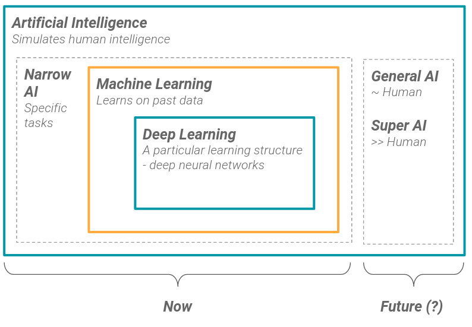

flowchart LR
A["User \n Input"] --> B["Natural Language \n Processing"]
B -->|"Emotion & \n Intent Recognition"| C{"Machine \n Learning"}
C -->|"Pattern \n Recognition"| D{"Cognitive Behavioral \n Therapy (CBT)"}
D -->|"Select Therapy \n Technique"| E["Woebot \n Response"]
E -->|"Feedback"| C
AI in Education
2025-02-10
What’s AI?
ศาสตร์ที่ว่าด้วยการจำลองสติปัญญาของมนุษย์ในเครื่องจักร โดยมีวัตถุประสงค์เพื่อให้เครื่องจักรหรือระบบคอมพิวเตอร์มีความสามารถในการคิด เรียนรู้ วิเคราะห์ และตัดสินใจเหมือนกับมนุษย์
AI ไม่ใช่แค่หุ่นยนต์ แต่ครอบคลุมอัลกอริทึม application และโมเดลที่สามารถคิด วิเคราะห์และตัดสินใจได้เอง
AI อยู่รอบตัวเราในชีวิตประจำวัน

What’s AI?

https://www.datakeen.co/what-is-artificial-intelligence-3/ (2020)
What’s AI?

A General Introduction to Artificial Intelligence (2023)

https://www.datakeen.co/what-is-artificial-intelligence-3/ (2020)

Predictive and Analytical AI
Language & Conversational AI
Generative AI
Perception AI
Automation & Control AI
Recommendation/Decision Support System
AI in the Modern World


https://miro.medium.com/v2/resize:fit:1400/format:webp/1*QKQA8ylu1lCtOkJaa_gGaw.png
AI in the Modern World
“Using two types of neural network - mathematical systems for identifying patterns in images or data - the Al system quickly learnt to identify ten features of eye disease from highly complex optical coherence tomography (OCT) scans. The system was then able to recommend a referral decision based on the most urgent conditions detected.” … “Al was able to make the right referral recommendation more than 94% of the time …”
Diabetic Retinopathy
Age-related Macular Degeneration
Glaucoma
Retinal Detachment
Optic Neuropathy
https://www.ucl.ac.uk/ioo/news/2018/aug/artificial-intelligence-equal-experts-detecting-eye-diseases (2018)
AI in the Modern World
AI in the Modern World

https://woebothealth.com/(2025)

https://www.youper.ai/how-it-works
AI in the Modern World

https://knihovna.utb.cz/en/services/tools/grammarly/
AI in the Modern World
AI ไม่ได้ถูกใช้เพียงแค่ในการวิเคราะห์ข้อมูลเท่านั้น แต่ยังสามารถ สร้างเนื้อหา ได้ เช่น ข้อความ รูปภาพ เสียง และวิดีโอ

https://www.xenonstack.com/blog/generative-ai-applications

https://www.zendesk.com.br/blog/generative-ai-guide/
Education 4.0
“A Global Framework for Shifting Learning Content and Experiences Towards the Needs of the Future”
ปรับตัวให้ยืดหยุ่น
ใช้เทคโนโลยีเป็นเครื่องมือ
พัฒนาทักษะที่ตอบโจทย์อนาคต

World Economic Forum (2020)
References

“A General Introduction to Artificial Intelligence.” 2023. In Artificial Intelligence Technology, 1–41. Singapore: Springer Nature Singapore. https://doi.org/10.1007/978-981-19-2879-6_1.
Gaël. 2020. “What Is Artificial Intelligence?” https://www.datakeen.co/what-is-artificial-intelligence-3/.
HR NOTE Thailand. 2021. “รู้จักยุค 4IR: อุตสาหกรรม 4.0 คืออะไรและมีผลกระทบอย่างไรต่อการทำงาน?” https://th.hrnote.asia/tips/industrial-revolution-4ir-210618/?t.
Jumper, John, Richard Evans, Alexander Pritzel, et al. 2021. “Highly Accurate Protein Structure Prediction with AlphaFold.” Nature 596: 583–89. https://doi.org/10.1038/s41586-021-03819-2.
Mansfield, Lucy A., Peer J. Nowack, Mehran Kasoar, et al. 2020. “Predicting Global Patterns of Long-Term Climate Change from Short-Term Simulations Using Machine Learning.” Npj Climate and Atmospheric Science 3: 44. https://doi.org/10.1038/s41612-020-00148-5.
McKinney, Scott M., Marcin Sieniek, Varun Godbole, et al. 2020. “International Evaluation of an AI System for Breast Cancer Screening.” Nature 577: 89–94. https://doi.org/10.1038/s41586-019-1799-6.
Pyzer-Knapp, Edward O., Jeffrey W. Pitera, Peter W. J. Staar, et al. 2022. “Accelerating Materials Discovery Using Artificial Intelligence, High Performance Computing and Robotics.” Npj Computational Materials 8: 84. https://doi.org/10.1038/s41524-022-00765-z.
RIB Software. 2024. “Data-Driven Decision Making in Businesses.” https://www.rib-software.com/en/blogs/data-driven-decision-making-in-businesses.
Srisuttiyakorn, Siwachoat, Kanit Sriklaub, Prapasiri Ratchaprapapornkul, and Watinee Amornpaisarnlert. 2024. “Technical Assistance for Mapping Education Data to Thailand Child-Sensitive Climate Change Risk.” Research Report. UNICEF.
UCL Institute of Ophthalmology. 2018. “Artificial Intelligence Equal to Experts in Detecting Eye Diseases.” https://www.ucl.ac.uk/ioo/news/2018/aug/artificial-intelligence-equal-experts-detecting-eye-diseases.
Woebot Health. 2025. “Woebot Health: Scalable Enterprise Solution for Mental Health.” https://woebothealth.com/.
World Economic Forum. 2020. “Schools of the Future: Defining New Models of Education for the Fourth Industrial Revolution.” Geneva, Switzerland: World Economic Forum. https://www.weforum.org/reports/schools-of-the-future-defining-new-models-of-education-for-the-fourth-industrial-revolution.